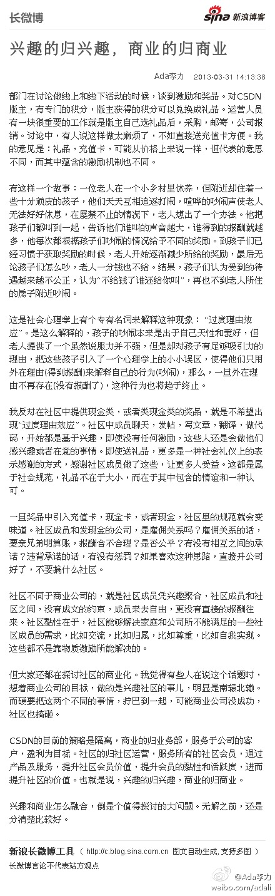

兴趣的归兴趣，商业的归商业：部门在讨论做线上和线下活动的时候，谈到激励和奖品。对CSDN版主，有专门的积分，版主获得的积分可以兑换成礼品。运营人员有一块很重要的工作就是版主自己选礼品后...文字版>> 网页链接 （新浪长微博>> 网页链接） 
#社区运营#社区中的兴趣与商业，可以比喻成皮和毛的关系。兴趣社区是皮，在此之上产生的商业价值是毛。“皮之不存，毛将焉附”，光撸毛，不管皮及躯体的健康，撸不了多久。光养皮不撸毛，是当宠物和家人养的，跟商业没关系。皮毛之间怎么平衡，则是大学问，需要案例，需要实践。@Ada李力:兴趣的归兴趣，商业的归商业：部门在讨论做线上和线下活动的时候，谈到激励和奖品。对CSDN版主，有专门的积分，版主获得的积分可以兑换成礼品。运营人员有一块很重要的工作就是版主自己选礼品后...文字版>> 网页链接 （新浪长微博>> 网页链接）